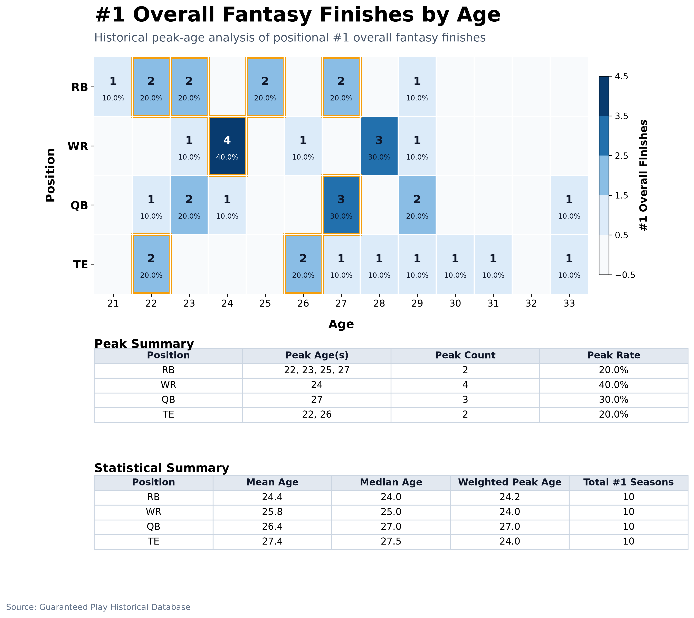

#1 Overall Finishes by Age
Separate comparison page for #1 overall fantasy seasons by position. The heatmap uses finish counts, with percent share shown in each nonzero cell.
Timeline: 2016-2025 | Scoring: Full PPR
Peak #1 Ages
- RB: Age 22 - 2 finishes (20.00%)
- WR: Age 24 - 4 finishes (40.00%)
- QB: Age 27 - 3 finishes (30.00%)
- TE: Age 22 - 2 finishes (20.00%)

Peak Summary
| Position | Peak Age(s) | Peak Count | Peak Rate |
|---|---|---|---|
| RB | 22, 23, 25, 27 | 2 | 20.0% |
| WR | 24 | 4 | 40.0% |
| QB | 27 | 3 | 30.0% |
| TE | 22, 26 | 2 | 20.0% |
Statistical Summary
| Position | Mean Age | Median Age | Weighted Peak Age | Total #1 Seasons |
|---|---|---|---|---|
| RB | 24.4 | 24.0 | 24.2 | 10 |
| WR | 25.8 | 25.0 | 24.0 | 10 |
| QB | 26.4 | 27.0 | 27.0 | 10 |
| TE | 27.4 | 27.5 | 24.0 | 10 |